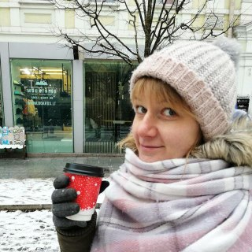

Veronika Mishkovec
Phone number +375-29-637-94-74;
e-mail veronikakireenko@gmail.com
Github https://github.com/VeronikaMishkovec
Summary
I want to begin a career of front-end developer. I haven’t got experience, but I have strong wish to study. I’m fast learner and I can spend all my free time studing front-end. I like this direction, because it contains both technical side and creative side.
Skills
HTML, CSS, base klowledge of JS( such as functions, loops, objects, arrays)
Experience and code examples
Game “Cross-stitch”: https://codepen.io/veronika-mishkowec/pen/dagOPgPicture on CSS for competition: https://codepen.io/veronika-mishkowec/pen/ywNBXY
Education
Belarusian State University of Informatics and Radioelectronics, Minsk, Belarus 09.2011-06.2016
HTMLAcademy online courses
English
Level B1 (Intermediate) Studying english at school, at university, one term at Streamline, now study by myself (reading books, watching videos, listening podcasts and clicking LinguaLeo.)